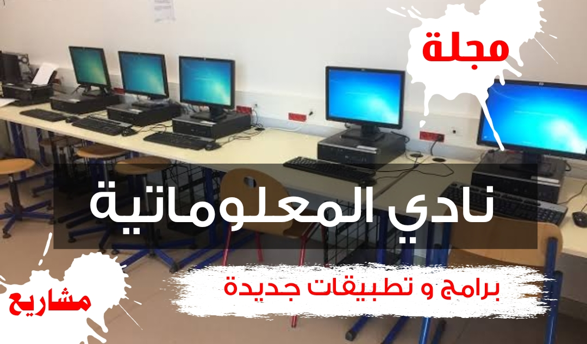

نادي المعلوماتية
تعرف على نادي المعلوماتية.
ما هو نادي المعلوماتية
إن التلميذ في سن المراهقة يميل أكثر إلى الإبداع و الابتكار ، و تفجير قدراته و إظهار الامكانيات التي يزخر بها ؛ لذلك يعتبر نادي المعلوماتية فضاء خصبا لاكتشاف مواهب التلاميذ و تنميتها سواء في مجال الإعلام الآلي أو في مجال آخر مع توظيف مفصلي قار للمعلوماتية. يقوم الاستاذ باختيار مجموعة من التلاميذ الذين لهم شغف بالإعلام الآلي و الحواسيب ، ثم ينظم معهم حصة مدتها ساعة من الزمن كل أسبوع تكون خارج أوقات الدراسة ، حيث يلتقي التلاميذ مع أستاذهم ، و يتعلمون شيئا ما أو ينجزون عملا معينا أو يطورون مشروعا ما حسب قدراتهم و الامكانيات المتوفرة. دور الاستاذ هنا هو التأطير فقط ، و الاجابة على مختلف الاستفسارات التي من الممكن أن يطرحها التلاميذ.
أفكار لنادي المعلوماتية
يعتمد نادي المعلوماتية على تفعيل عدد من النشاطات التي يؤطرها الأستاذ ، بينما يعمل أعضاء النادي ( التلاميذ ) على الاكتشاف و الإبتكار و إنتاج الجديد في كل مرة. و فيما يلي قائمة تضم بعض النشاطات التي يمكن تنظيمها في نادي المعلوماتية :
1 . إعداد مجلة مدرسية
أول ما يقوم به الاستاذ هو انتقاء عناصر مناسبة من التلاميذ لانجاز هذا المشروع ؛ فيجتمع بهم و يحددون الأركان التي ستتوفر عليها المجلة. مثلا : 1 - ركن اختراعات 2 - ركن أقلام التلاميذ 3 - ركن معلومات نادرة في ركن اختراعات يتم نشر مجموعة من المقالات الثقافية التي تتحدث عن اختراع معين ، مثل السيارة أو الطائرة إلخ ... طبعا يستغل التلميذ الموكل له العمل قاعة المعلوماتية و الانترنت لجمع المعلومات اللازمة ، أما في ركن أقلام التلاميذ فيتم تشجيع التلاميذ الموهوبين في كتابة الشعر و النصوص الأدبية و القصص القصيرة ليبدعوا و يكتبوا و تخط اناملهم ما يختلج في أعماقهم ، يطلع الاستاذ على هذه المؤلفات و ينتقي منها ما يتماشى مع طبيعة المدرسة ، المحيط و المجتمع ككل. بعد ذلك يكتب التلميذ نصه على معالج النصوص و يزينه ليبدو جذابا مريحا للأعين. يبقى فقط ركن معلومات نادرة ، هنا يكلف الاستاذ مجموعة تلاميذ بالبحث عن موضوع غير معروف لدى التلاميذ كفاكهة الاترج أو الحشرات المضيئة ، بعد ذلك ، يتحقق الاستاذ من هذه المعلومات ثم يترك التلاميذ ليدونوها في معالج النصوص. تصميم غلاف المجلة يمكن أيضا أن يشترك فيه الاستاذ مع تلامذته ، و هنا يكون الاستاذ قد وصل إلى المرحلة ما قبل الأخيرة و هي الطباعة. إذا سمحت الظروف طبعا ، يستحسن طبع المجلة داخل المدرسة ، سواء عن طريق طابعة المخبر إن كانت متوفرة ، أو عن طريق طابعة الإدارة إذا لم يكن المخبر مجهزا بطابعة. بعد ذلك يتم نشر المجلة في ساحة المدرسة ، حيث يتم تعليق صفحاتها على سبورة إعلانات مع وضع أسماء التلاميذ المشاركين في المشروع و تطييب خاطرهم بعبارات المدح و الامتنان. هذه التجربة ستفجر في التلاميذ حب العمل و المشاركة ، ثم إن أولياء التلاميذ سيطلعون على ما أنجزه أبنائهم عندما يزورون المؤسسة لاستلام الكشوف مثلا ... مشروع المجلة يتطلب وقتا و جهدا و تفانيا من الاستاذ ، قد يتطلب منك الأمر قرابة الشهر من الاعداد و التنقيح ، و تزيد المدة كلما زاد غنى المجلة بالمواضيع. بالتوفيق لكم جميعا.
2. دورات لتعلم برامج جديدة
يحب التلاميذ تعلم برامج جديدة عليهم كبرامج التصميم. مثلا ، يمكنك أن تعلمهم تصميم الصور عن طريق برنامج " بيكاسا " ، أو " فوتوشوب " و غيرها من البرامج المتاحة ، يمكنك حتى أن تعلمهم التصميم باستعمال " باوربوينت " فهو أيضا يزخر بميزات و خصائص تسمح للمرء باعداد تصاميم احترافية دون اتقان برامج التصميم الأخرى. يمكن كذلك تدريب التلاميذ على تصميم و تركيب الفيديوهات باستعمال برنامج " أدوبي بريمير برو " أو " بانديكام " أو " كامتازيا ستوديو " أو " AVS " و غيرها من البرامج ، حسب ما يتقنه الأستاذ. يمكن كذلك للاستاذ أن يدرب التلاميذ على تصميم صفحة ويب بسيطة تكون لهم كمدخل الى عالم تطوير المواقع الإلكترونية. في كل مرة يقوم التلاميذ بإعداد مشروع ما " تصميم صورة ؛ فيديو ... إلخ " ، و يتم نشر هذه الأعمال على الأنترنت إن أكمن ذلك طبعا. هذا النشاط يعتبر مسليا للتلاميذ و يجعل مواهبهم تطفو إلى السطح ليبهروا الجميع بما في مقدورهم إنجازه. بالتوفيق
3. تعلم مهارات ما في الحاسوب
يمكن استغلال حصة نادي المعلوماتية لتدريب التلاميذ بعض المهارات في الكمبيوتر مثل : 1. تحميل فيديوهات من الانترنت ( يوتيوب مثلا ). 2. مشاركة الانترنت من الحاسوب الى الهاتف. 3. استرجاع الملفات المحذوفة. 4. تنصيب و إزالة برنامج ما. 5. تشغيل جهاز العرض. 6. إيقاف برنامج ما عندما يحدث تهنيج للجهاز. 7. قلب شاشة الحاسوب باستعمال أزرار لوحة المفاتيح. و غيرها من الأفكار ...
4. إنجاز بعض المشاريع
يمكن كذلك لأعضاء النادي رفقة أستاذهم أن يبتكروا أفكارا لمشاريع جديدة ؛ حيث ينجزونها وفق الإمكانيات المتوفرة في المؤسسة التعليمية ؛ و كمثال عن ذلك : 1. جرس ذكي يرن أوتوماتيكيا كلما حان ميعاد رنينه ، و ذلك بالاستعانة بلوحة برمجة مثل " الاردوينو " أو " المايكروبيت ". 2. جرس إنذار ( ايضا باستعمال الاردوينو أو المايكروبيت ) 3. روبوت ميكانيكي على شكل سيارة بأربعة عجلات تسير وفق مسار معين ( الاردوينو دائما أو المايكروبيت) 4. بوصلة، باستعمال جهاز المايكروبيت. 5. مستشعر درجة الحرارة، باستعمال جهاز المايكروبيت. 6. مستشعر الإنارة، باستعمال جهاز المايكروبيت. 7. يمكن للأستاذ تنظيم خرجات ميدانية للتلاميذ إلى أي مصنع للحواسيب أو للهواتف النقالة أو غير ذلك من المنتجات المواكبة للتكنولوجيا و الإعلام الآلي. الخ ...
5. نشاطات أخرى ...
يمكن ابتكار نشاطات أخرى ... المهم أن تكون تربوية.
قناة اليوتيوب